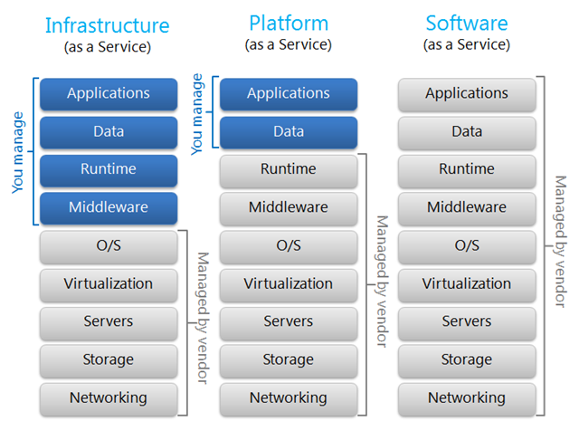

PENGENALAN CLOUD COMPUTING
Created by
- Mhd Tantowi Zauhari
- Mhd Syawal Bangun
- Gerald Halomoan Samosir
- Steven
Mengenal Cloud Computing
- Apa itu Cloud Computing?.
- Karakteristik cloud computing.
- Model layanan cloud computing.
- Model Deployment cloud computing.

Latar Belakang Cloud Computing
- Teknologi memberi kemudahan dan kenyamanan luar biasa.
- kegiatan yang di anggap tidak mungkin menjadi mungkin.
- kegiatan yang membutuhkan waktu lama jadi cepat.
- berbasis internet.
- aplikasi sistem yang mudah dan efisien
Permasalahan diperoleh dalam sistem aplikasi jaringan.
- Bila ada perubahan pada local server maka memerlukan reinstall
- Sistem Operasi Sangat Bergantung kepada OS
Cloud Computing
- Cloud Computing tidak harus disewa alias free.
- Mirip Dengan Server.
- Lebih Sederhana.
- perusahaan yang menggunakan Cloud.
- IMB.
- Microsoft.
- Google.
- Apple.
- Dan Lainnya .
DealPOS
- Dikembangkan oleh Suatu Perusahaan.
- Metode Kerja Point Of Sale (POS).
- Mudah Mengakses Data Toko oleh Pemilik Toko.
Resiko Cloud Computing
- Keamanan dan Kerahasian Data
Cloud Computing memang hadir dengan membawa berbagai macam solusi dari permasalahan komputasi, tapi ada juga resiko yang membuat suatu organisasi tidak mau mengadaptasi cloud computing. Dua resiko yang paling penting adalah masalah keamanan dan kerahasiaan data, karena data kita diupload ke internet dimana semua orang bisa mengaksesnya atau khawatir layanan tersebut mengalami serangan cyber.
- Service level
provider mungkin tidak akan konsisten dengan performance dari application atau transaksi. Hal ini mengharuskan anda untuk memahami service level yang anda dapatkan mengenai transaction response time, data protection dan kecepatan data recovery.
Lanjutan Resiko Cloud Computing
- Privacy
orang lain / perusahaan lain juga melakukan hosting kemungkinan data anda akan keluar atau di baca oleh pemerintah U.S. dapat terjadi tampa sepengetahuan anda atau approve dari anda.
- Compliance
juga harus memperhatikan regulasi dari bisnis yang anda miliki, dalam hal ini secara teoritis cloud service provider diharapkan dapat menyamakan level compliance untuk penyimpanan data didalam cloud, namun karena service ini masih sangat muda anda diharapkan untuk berhati hati dalam hal penyimpanan data.
Lanjutan Resiko Cloud Computing
- Data ownership
data anda masih menjadi milik anda begitu data tersebut tersimpan didalam cloud? mungkin pertanyaan ini sedikit aneh, namun anda perlu mengetahui seperti hal nya yang terjadi pada Facebook yang mencoba untuk merubah terms of use aggrement nya yang mempertanyakan hal ini.
- Data Mobility
anda dapat melakukan share data diantara cloud service? dan jika anda terminate cloud relationship bagaimana anda mendapatkan data anda kembali? Format apa yang akan digunakan ? atau dapatkah anda memastikan kopi dari data nya telah terhapus
Manfaat Cloud Computing
- Semua Data Tersimpan di Server Secara Terpusat.
- Keamanan Data Terjamin.
- Fleksibilitas dan Skalabilitas yang Tinggi.
- Investasi Jangka Panjang.
Semua Data Tersimpan Di Server Secara Terpusat.
- Keunggulan :
- Memungkinkan User Untuk Simpan Data Scara Terpusat.
- Tak Perlu Menyediakan Infrastruktur (Data Center).
- Media Penyimpanan Atau Storage Sudah Virtual.
Karakteristik Cloud Computing
- On-Demand Self-Service .
- Broad Network Access .
- Resource Pooling .
- Rapid Elasticity .
- Measured Service .
On-Demand Self-Service (pelayanan mandiri diri sendiri saat diperlukan)
Pengguna dapat memesan dan mengelola layanan tanpa interaksi manusia dengan penyedia layanan, misalnya dengan mengguna-kan, sebuah portal web dan manajemen antarmuka. Pengadaan dan perlengkapan layanan serta sumber daya yang terkait terjadi secara otomatis pada penyedia
Broad Network Access (akses jaringan yang besar)
Layanan yang tersedia terhubung melalui jaringan pita lebar, terutama untuk dapat diakses secara memadai melalui jaringan internet, baik menggunakan thin client, thick clien, ataupun media lain seperti smartphone.
Resource Pooling (resource menyatu)
Penyedia layanan cloud memberikan layanan melalui sumberdaya yang dikelompokkan di satu atau berbagai lokasi data center yang terdiri dari sejumlah server dengan mekanisme multi-tenant. Mekanisme multi tenant ini memungkinkan sejumlah sumberdaya komputasi digunakan bersama-sama oleh sejumlah user, dimana sumberdaya tersebut baik yang berbentuk fisik maupun virtual, dapat dialokasikan secara dinamis untuk kebutuhan pengguna/pelanggan sesuai permintaan. Dengan demikian, pelanggan tidak perlu tahu bagaimana dan darimana permintaan akan sumberdaya komputasinya dipenuhi oleh penyedia layanan. Yang penting, semua permintaan dapat terpenuhi. Sumberdaya komputasi ini meliputi media penyimpanan, memory, processor, pita jaringan, mesin virtual.
Rapid Elasticity (elastisitas cepat)
kapabilitas layanan harus dapat diatur kapasitasnya sesuai dengan yang diinginkan dan dapat dilakukan dalam waktu yang singkat.
Measured Service (layanan pengukuran)
Sumber daya cloud yang tersedia harus dapat diatur dan dioptimasi penggunaannya, dengan suatu sistem pengukuran yang dapat mengukur penggunaan dari setiap sumberdaya komputasi yang digunakan (penyimpanan,memory,processor,lebar pita, dan aktivitas user, dan lainnya). Dengan demikian, jumlah sumber daya yang digunakan dapat secara transparan diukur yang akan menjadi dasar bagi user untuk membayar biaya penggunaan layanan.
Cloud computing mempunyai 3 tingkatan layanan yang diberikan kepada pengguna, yaitu:
- Infrastructure as service, hal ini meliputi Grid untuk virtualized server, storage & network. Contohnya seperti Amazon Elastic Compute Cloud dan Simple Storage Service.
- Platform as a service, hal ini memfokuskan pada aplikasi dimana dalam hal ini seorang developer tidak perlu memikirkan hardware dan tetap fokus pada pembuatan aplikasi tanpa harus mengkhawatirkan sistem operasi, infrastructure scaling, load balancing dan lain-lain. Contohnya yang sudah mengimplementasikan ini adalah Force.com dan Microsoft Azure investment.
- Software as a service: Hal ini memfokuskan pada aplikasi dengan Web-based interface yang diakses melalui Web Service dan Web 2.0. Contohnya adalahGoogle Apps dan SalesForce.com.
Model Layanan Cloud Computing
- Software as a Service (SaaS)
- Platform as a Service (PaaS)
- Infrastructure as a Service (IaaS) 
Software as a Service (SaaS)
layanan yang diberikan kepada pengguna berupa perangkat lunak seperti office suite. Contoh Google Doc dan Apple iWork yang merupakan aplikasi office. Tipe pengguna dari layanan SaaS adalah End User, pengguna yang tinggal menggunakan aplikasi saja.
Platform as a Service (PaaS)
layanan yang diberikan kepada pengguna berupa platform untuk membantu proses pengembangan perangkat lunak seperti database, service, dan platform bahasa pemrograman. Contoh Google App Engine, RedHat OpenShift, dan Koding. Tipe penggunan dari layanan PaaS adalah Application Developer, pengembang aplikasi bisa langsung fokus mengembangkan aplikasi tanpa perlu menyiapkan sendiri platform pengembangannya.
Infrastructure as a Service (IaaS)
layanan yang diberikan kepada pengguna berupa komputer server (mesin virtual) dan jaringan seperti layanan VPS (Virtual Private Server). Contoh Amazon Web Service (AWS), Linode, Digital Ocean, dan Cloud Kilat. Tipe pengguna dari layanan IaaS adalah Network/System Architect, sysadmin yang menyiapkan semua konfigurasi sistem mulai dari sistem operasi, jaringan, sampai platform pengembangan aplikasi.
Model Deployment Cloud Computing
- Public Cloud
- Private Cloud
- Community Cloud
- Hybrid Cloud